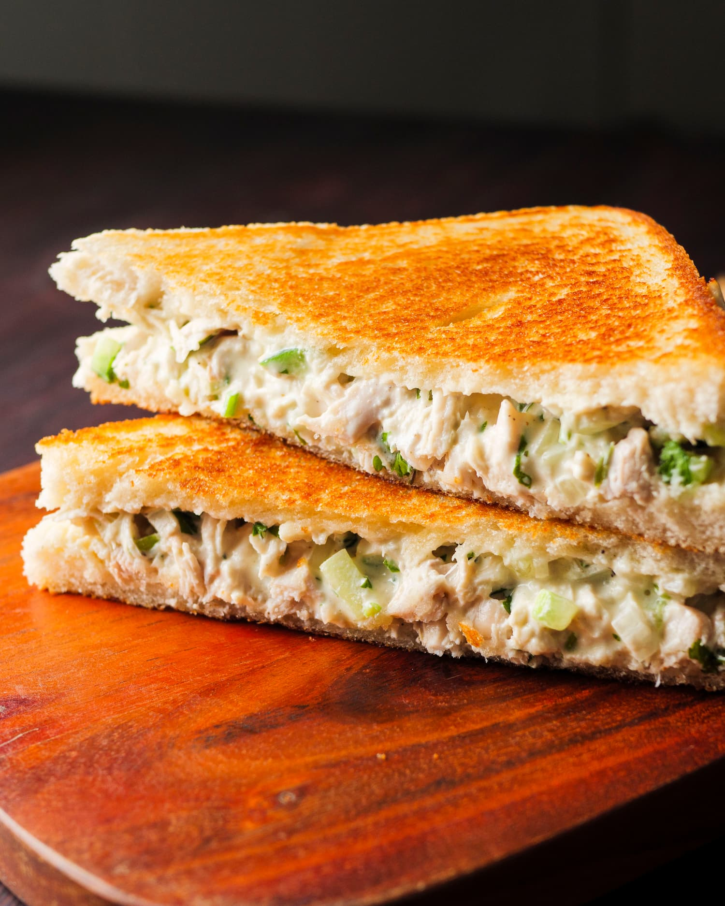

Chicken Mayo Sandwich

Ingredients
For stuffing
- 1 1/2 to 2 tbsp. mayonnaise
- 1 to 1 1/2 tbsp. sour cream or hung yougurt or cream cheese
- 1/2 to 1 tbsp. lemon juice (optional)
- 1/4 tsp. of dry mustard
- 1/8 to 1/4 tsp. black pepper powder
- 1/4 cup lettuce shredded
- 2 tbsp. coriander leaves
- 2 tbsp red onion finely chopped
For seasoning chicken
- 1/4 tsp. red chilli powder or chilli flakes
- 1/4 tsp. garlic powder (or 2 cloves garlic minced)
- 1/4 tsp. onion powder
- 1/4 tsp. salt
- 1/4 tsp. garam masala
For sandwich
- 90 gm boneless chicken
- 2 slices bread
- 1 tbsp. butter
- 2 lettuce leaves
Steps
For stuffing
- Heat the chicken with oil
- Stir in the spices and mix well.
- Add salt to taste.
- Shred or cut the chicken into smaller bits.
- Transfer to a mixing bowl.
- Add mayo, & sour cream or cream cheese or hung yougurt.
- Add finely chopped lettuce, corriander, onions, mustard, black pepper and lemon juice.
- Mix well and adjust seasoning to taste.
For sandwich
- Grill the bread.
- Butter once side of each slice. (buttered sides go outside)
- Spread mayo on bread slice and place the lettuce so it holds the lettuce well.
- Spread the chicken fillling.
- Cover with another slice of bread.
- Cut the sandwich in half along the diagonal and serve.
Home